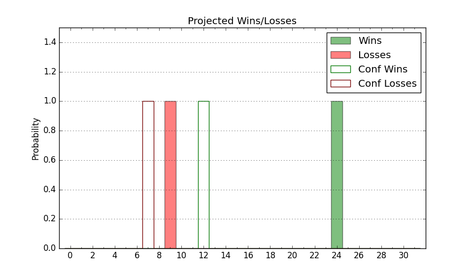

| Home | Game Probabilities | Conferences | Preseason Predictions | Odds Charts | NCAA Tournament |
| City: | Chapel Hill, North Carolina | |
| Conference: | ACC (5th)
| |
| Record: | 12-6 (Conf) 24-7 (Overall) | |
| Ratings: | Comp.: 25.4 (25th) Net: 25.4 (25th) Off: 123.0 (34th) Def: 97.6 (28th) SoR: 89.8 (18th) |
| Remaining | ||||||
|---|---|---|---|---|---|---|
| Date | Opponent | Win Prob | Pred. | |||
| 3/12 | (N) Clemson (38) | 59.7% | W 72-69 | |||
| Previous | Game Score | |||||
| Date | Opponent | Win Prob | Result | Off | Def | Net |
| 11/3 | Central Arkansas (177) | 96.1% | W 94-54 | -1.8 | 23.3 | 21.5 |
| 11/7 | Kansas (18) | 57.7% | W 87-74 | 7.3 | 1.6 | 8.9 |
| 11/11 | Radford (247) | 98.0% | W 89-74 | -25.1 | 4.6 | -20.5 |
| 11/14 | North Carolina Central (351) | 99.6% | W 97-53 | 1.7 | 8.3 | 9.9 |
| 11/18 | Navy (143) | 94.9% | W 73-61 | -17.3 | 4.1 | -13.2 |
| 11/25 | (N) St. Bonaventure (155) | 91.7% | W 85-70 | -5.3 | 4.8 | -0.5 |
| 11/27 | (N) Michigan St. (10) | 36.3% | L 58-74 | -7.7 | -6.8 | -14.6 |
| 12/2 | @Kentucky (28) | 38.3% | W 67-64 | -2.7 | 14.1 | 11.3 |
| 12/7 | Georgetown (89) | 89.6% | W 81-61 | -8.2 | 13.3 | 5.1 |
| 12/13 | USC Upstate (289) | 98.7% | W 80-62 | -2.8 | -13.5 | -16.2 |
| 12/16 | East Tennessee St. (141) | 94.8% | W 77-58 | 3.4 | -1.2 | 2.2 |
| 12/20 | (N) Ohio St. (26) | 50.9% | W 71-70 | -4.3 | 6.6 | 2.3 |
| 12/22 | East Carolina (267) | 98.3% | W 99-51 | 6.5 | 21.8 | 28.3 |
| 12/30 | Florida St. (72) | 85.8% | W 79-66 | -6.4 | 7.6 | 1.2 |
| 1/3 | @SMU (32) | 40.5% | L 83-97 | 6.7 | -25.7 | -19.0 |
| 1/10 | Wake Forest (62) | 84.4% | W 87-84 | 5.2 | -13.5 | -8.3 |
| 1/14 | @Stanford (59) | 59.7% | L 90-95 | 10.9 | -21.8 | -10.8 |
| 1/17 | @California (74) | 64.5% | L 78-84 | 0.4 | -13.8 | -13.4 |
| 1/21 | Notre Dame (90) | 89.6% | W 91-69 | 8.3 | -0.3 | 7.9 |
| 1/24 | @Virginia (22) | 31.5% | W 85-80 | 20.7 | -3.4 | 17.3 |
| 1/31 | @Georgia Tech (154) | 85.6% | W 91-75 | 9.3 | -7.8 | 1.5 |
| 2/2 | Syracuse (81) | 88.1% | W 87-77 | 2.8 | -5.9 | -3.1 |
| 2/7 | Duke (1) | 20.5% | W 71-68 | 7.1 | 8.7 | 15.9 |
| 2/10 | @Miami FL (33) | 40.5% | L 66-75 | -15.0 | 3.8 | -11.1 |
| 2/14 | Pittsburgh (95) | 90.6% | W 79-65 | -1.7 | -1.4 | -3.1 |
| 2/17 | @North Carolina St. (35) | 41.6% | L 58-82 | -23.7 | -12.6 | -36.4 |
| 2/21 | @Syracuse (81) | 68.4% | W 77-64 | -0.2 | 11.2 | 11.1 |
| 2/23 | Louisville (12) | 52.4% | W 77-74 | 2.8 | -0.1 | 2.7 |
| 2/28 | Virginia Tech (56) | 82.6% | W 89-82 | 13.3 | -14.1 | -0.8 |
| 3/3 | Clemson (38) | 73.2% | W 67-63 | -9.8 | 7.4 | -2.4 |
| 3/7 | @Duke (1) | 7.0% | L 61-76 | -1.7 | 7.7 | 6.0 |
| Stats & Trends | |||||
|---|---|---|---|---|---|
| Current | Day | Week | Month | Season | |
| Composite | 25.4 | +0.0 | +0.0 | -1.0 | +6.5 |
| Comp Rank | 25 | -- | -- | +2 | +6 |
| Net Efficiency | 25.4 | +0.0 | +0.0 | -1.2 | -- |
| Net Rank | 25 | -- | -- | +2 | -- |
| Off Efficiency | 123.0 | -0.1 | -0.3 | -1.3 | -- |
| Off Rank | 34 | -- | -2 | -8 | -- |
| Def Efficiency | 97.6 | +0.1 | +0.3 | +0.1 | -- |
| Def Rank | 28 | -- | +1 | +5 | -- |
| SoS Rank | 44 | -- | +4 | +11 | -- |
| Exp. Wins | 24.0 | -- | -0.1 | +0.3 | +1.9 |
| Exp. Conf Wins | 12.0 | -- | -0.1 | +0.3 | +0.8 |
| Conf Champ Prob | 0.0 | -- | -- | -0.3 | -14.7 |

| Advanced Stats | ||
|---|---|---|
| Stat | Value | Rank |
| Off Eff FG % | 0.576 | 33 |
| Off Ast Ratio | 0.179 | 35 |
| Off ORB% | 0.336 | 87 |
| Off TO Rate | 0.115 | 14 |
| Off FT Ratio | 0.423 | 28 |
| Def Eff FG % | 0.450 | 17 |
| Def Ast Ratio | 0.126 | 35 |
| Def ORB% | 0.255 | 28 |
| Def TO Rate | 0.127 | 304 |
| Def FT Ratio | 0.218 | 2 |